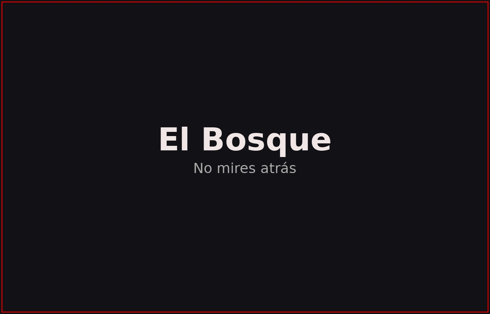

Sinopsis
Tras la desaparición de su hermana, Alba regresa a la vieja casa familiar en el borde del bosque. Allí descubre un diario que no debería existir y una presencia que conoce su nombre.

La casa está en silencio... pero el silencio es un sonido que grita. Cada habitación guarda un eco: una risa infantil, un sollozo ahogado, un golpe a la hora exacta. Alba deberá elegir entre abrir la puerta o cerrar los ojos.